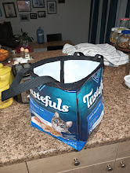

We Have NOAA At Home
One of the (many) things I've been doing recently to combat my existential dread at, well,
*gestures widely at the dumpster fire of worm-eaten billionare oligargchs my countryfolk
decided were fit to rule us* is something I've colloquially been referring to as
Eco Goblin-ing!
The idea is - if I can make it, thrift it, or find it in the garbage, I will. If I can
make it out of garbage even better! This has led to a number of ongoing projects including:
- A beach mat woven from old t-shirts, socks, and underwear
- Socks crocheted from yarn I got for $1 at a garage sale (with a hook I got at the craft thrift store)
- A garden full of pots repurposed from buckets I found on the beach after the last storm (supplemented with kitchen scraps and mulch from the free pile at a local park.) The stained glass hanging and woven tucan planter were also garbage finds, as was the shelf. As was the raised bed. Technically so were the cats. You get the idea.
- "Jamba Juice At Home" with a 1990s juicer I found at Goodwill (see above: kitchen scraps to supplement garden)
- Making my own soap, lotion, muscle balm, and skincare products in the kitchen, mostly out of a large bucket of shea butter I obtained in bulk last year.
- Canning applesauce, broth, and cole slaw (made from free apples, vegetable scraps and meat bones, and a massive leftover head of cabbage, respectively.) 
- A reusable bag made out of washed cat food bags and quilt binding.
- Countless mended, repurposed, and otherwise re-imagined clothing items

I've been experimenting with cheesemaking and I want to try growing mushrooms again this summer -
subsequently I've been on the lookout for a metal shelf and a mini-fridge on freecycle to use as
a cheese cave.
I've been gradually embracing Eco Goblin Life for the last 4 or 5 years, but began again in earnest last winter
once I realized things were about to get shitty in new and exciting ways. One of the things I've been most
fascinated with recently has been predicting the weather. I've even got Chuck on the train, although
to be fair he has been wonderfully supportive and enthusiastic about all my weird schemes.
Our weather journal. This month I added space to add more specific data so I can more easily track things.
I may even program something in the future to be able to enter data digitally instead of using the
notebook. The cloud book (found secondhand on thriftbooks) has also been incredibly useful.
This way of living feels like finding treasures in a video game. There are so many resources. There is
so much...stuff on this planet. Everywhere. The vast majority of what I need can be sourced for free or
secondhand, and there's something profoundly comforting about that for me. There's also the added bonus that
capitalism doesn't work on me anymore, and neither does advertising. Despite the grave uncertainty that I'm
facing as a human on this planet in The Year of Our Lord 2025, I am somewhat placated by the fact that I can
rely on myself - to a point. Sure would be nice if we had, I dunno, a protective system in place. Crazy, I
know. But until we're smart enough to build that for ourselves, I'll keep reading the clouds, I guess.
Posted on: May 16, 2025 at 9:16am | Category: Eco-Goblin
What Manner of Nonsense Is This?
A long form blog about my transition from cartoons into computer science.
Want to read more?